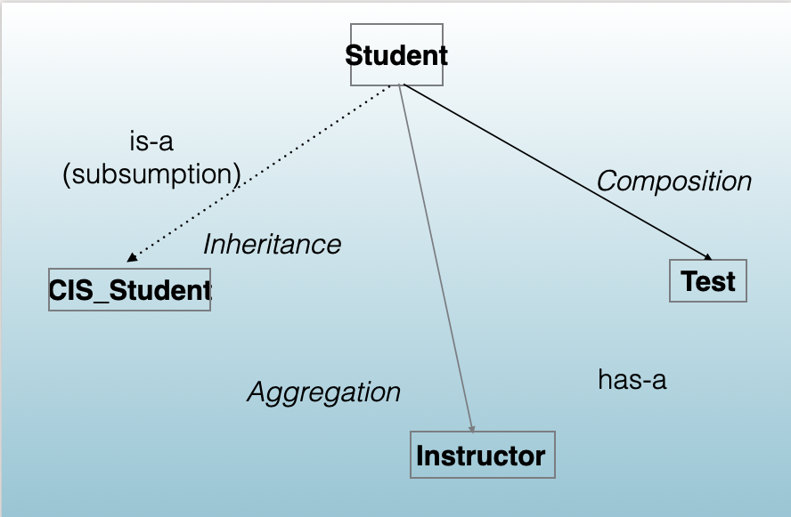
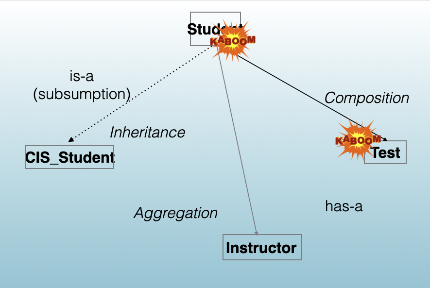
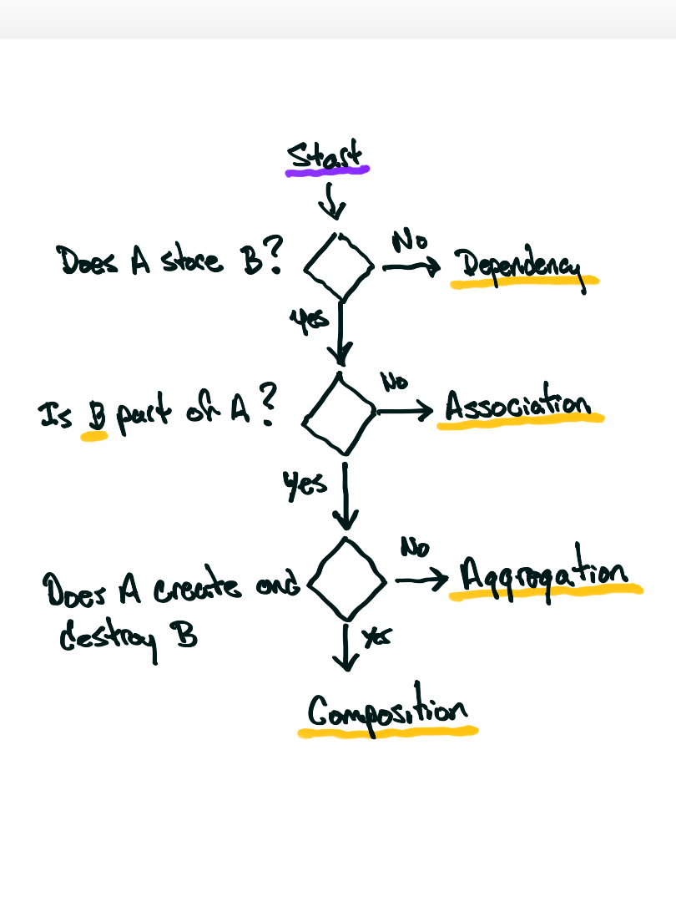

CISP 400 Object-Oriented Programming
C++
Dr. Caleb Fowler
Last Time
- Type Conversion Operators
- Conversion Constructors
- Object Conversions
- Conversion Safety
- Operator Chaining
- Unit Testing
Today’s Agenda
- Conversion Review
- Class Relationships
- Aggregation and Composition
- Relationship Applications
- Exception Basics
Conversion Review
When Your Object Interacts with Other Types
- A
Temperaturemeets adouble, aFahrenheit, or a function that expects something else. - What do we do?
Two Ways to Convert
- Type conversion operator: your object becomes another type.
- Conversion constructor: another type becomes your object.
Type Conversion Operator
- A member function written
operator T() const, whereTis the target type. - No return type is written, and it takes no parameters.
- The compiler calls it wherever your object is used and a
Tis needed.
class Temperature {
private:
double celsius;
public:
Temperature(double value = 0.0) { celsius = value; }
// Converts a Temperature to its Celsius value
operator double() const { return celsius; }
};
int main() {
Temperature today(21.5);
double reading = today; // initialization
double warmer = today + 1.5; // arithmetic
cout << reading << " " << warmer << endl;
return 0;
}. . .
21.5 23readinggets the Celsius value.today + 1.5convertstodaytodouble, then adds.
Convert Constructor
- A constructor that builds your class from one value of another type.
- The compiler may call it on its own wherever your class is needed and that other type is supplied.
Examples
The Rules
A constructor is a conversion constructor when it:
- Can be called with a single argument.
- Is not marked
explicit.
Single Argument Gotcha
- A constructor with several parameters still converts if every parameter after the first has a default value.
Fahrenheit(double value, char scale = 'F')can be called with onedouble, so it converts adouble.
Explicit
explicitmeans the constructor runs only when the code calls it directly.- It never converts a value on its own, so
=, argument passing, and returns cannot use it.
Without explicit
Summary
- A type conversion operator turns your object into another type; a conversion constructor turns another type into your object.
- A constructor that can take one argument and is not
explicitconverts.
Class Relationships
Relationships
| Relationship Type | Relationship Example | Key Characteristic |
|---|---|---|
| Association | Student ↔︎ Course | General uses relationship |
| Aggregation | Library → Book | Weak ownership (has-a) |
| Composition | Car → Engine | Strong ownership (part-of) |
| Inheritance | Dog → Animal | Hierarchical (is-a) |
| Dependency | Printer → Document | Temporary use |
| Realization | Bird → Flyable | Implements behavior |
| Friendship | Matrix ↔︎ Calculator | Explicit access granting |
Relationships
- Dependency
- Association
- Aggregation
- Composition
- Inheritance
Focus on These 3 Relationships

Focus on These 3 Relationships

Front-End and Back-End Classes

Composition
- A class holds an object of another class as a member, and owns it.
- The part is created with the whole and destroyed with the whole.
What Does Composition Do For Me?
- Allows us to make use of behavior in other classes.
Aggregation
- A class stores a pointer or reference to an object of another class that is part of it.
- The class neither creates nor destroys that object; it exists on its own.
What Does Aggregation Do For Me?
- Allows us to make use of behavior in other classes.
- We can change this behavior by changing the classes.
Inheritance
- A new class is built from an existing class.
- The derived class is a kind of the base class and gets its members.
What Does Inheritance Do For Me?
- Inheritance allows us to write code in one class …
- … and use that same exact code in many other classes.
- And we can mix and match what code we want those other classes to use.
Relationship Algorithm

Name That Relationship
Name That Relationship: Answers
| Snippet | Stores B? | Part of A? | A creates and destroys B? | Relationship |
|---|---|---|---|---|
A: Printer, Document |
No | Dependency | ||
B: Car, Engine |
Yes | Yes | Yes, as a member object | Composition |
C: Driver, Car |
Yes | No | Association | |
D: Department, Teacher |
Yes | Yes | No: teachers are hired elsewhere | Aggregation |
Same Member, Different Relationship
Composition: Car creates and deletes the engine
- The member’s type does not decide the relationship. Who deletes the object does.
Why the Label Matters
| How A holds B | Who builds, copies, and destroys B | What you write |
|---|---|---|
Member object: Engine engine; |
The compiler, automatically | Nothing extra |
Owning pointer: new in A |
You | Destructor, deep copy, and move (Rule of Five, 08.02), or a unique_ptr (05.02) |
| Non-owning pointer: passed in | Whoever created B | Never delete; copying the pointer is intended |
- Pick the wrong row and you get a leak, a double delete, or a dangling pointer.
Relationships and Their Code
| Relationship | Meaning | Code shape |
|---|---|---|
| Dependency | A uses B briefly | B is a parameter or a local variable |
| Association | A works with B over time; neither is part of the other | A stores a pointer or reference to B |
| Aggregation | B is part of A, but A does not own B | A stores a pointer or reference to B |
| Composition | B is part of A, and A owns B | A stores B as a member object |
| Inheritance | A is a kind of B | class A : public B (11.02) |
Summary
- Ask whether A stores B, whether B is part of A, and whether A creates and destroys B; the answers separate dependency, association, aggregation, and composition.
- Who deletes the object decides the relationship, and the relationship decides which destructor and copy code you write.
Aggregation and Composition
Where Do the Parts Come From?
- Composition stores the part as a member object. Who builds it?
Does This Compile?
class Roster {
private:
int seats;
public:
explicit Roster(int capacity) { seats = capacity; }
int size() const { return seats; }
};
class Course {
private:
string name;
Roster roster;
public:
Course(const string& n, int seats) {
name = n;
roster = Roster(seats);
}
};
int main() {
Course cisp("CISP 400", 30);
return 0;
}Members Are Built Before the Body
- g++:
no matching function for call to 'Roster::Roster()' - Every member is built before the body runs. If you do not say how, the compiler uses the constructor with no arguments.
Member Initializer List Anatomy
| Part | Meaning |
|---|---|
: |
Starts the member initializer list |
name(n) |
Builds name from the parameter n |
roster(seats) |
Builds roster by calling Roster(int) with seats |
, |
Separates the members |
{ } |
The body runs after every member is built; here it has nothing to do |
Member Initializer List Anatomy
class Roster {
private:
int seats;
public:
// The only constructor: a Roster cannot be built without an int
explicit Roster(int capacity) { seats = capacity; }
int size() const { return seats; }
};
class Course {
private:
string name; // built first: declared first
Roster roster; // built second
public:
// The list builds each member before the body runs:
// name(n) builds name directly from n
// roster(seats) calls Roster(int), so Roster() is never needed
Course(const string& n, int seats) : name(n), roster(seats) { }
void print() const {
cout << name << ": " << roster.size() << " seats" << endl;
}
};
int main() {
Course cisp("CISP 400", 30);
cisp.print();
return 0;
}In What Order?
class Part {
private:
char id;
public:
Part(char c) { id = c; cout << "build " << id << endl; }
~Part() { cout << "destroy " << id << endl; }
};
class Whole {
private:
Part first;
Part second;
public:
Whole() : second('B'), first('A') { cout << "Whole body" << endl; }
~Whole() { cout << "~Whole body" << endl; }
};
int main() {
Whole w;
return 0;
}. . .
build A
build B
Whole body
~Whole body
destroy B
destroy AWhen the List Is Required
| Member | Why the list is required |
|---|---|
A class with no default constructor, such as Roster |
The body is too late to build it |
const int limit; |
A const cannot be assigned after it is built |
Teacher& head; |
A reference must be bound when it is created |
| A base class (11.02) | It is built before the derived part, the same way |
- Everywhere else the list is still preferred: the member is built once instead of built and then assigned.
Copies for Free
Output: CISP 400: 30 seats
Coursehas no copy constructor, copy assignment, or destructor, and it does not need them.
Aggregation: Store the Pointer
// Department does not own its teachers,
// so it has no destructor
class Department {
private:
string title;
Teacher* teachers[MAX_TEACHERS];
int count;
public:
Department(const string& t) : title(t), count(0) { }
void addTeacher(Teacher* t) {
if (count < MAX_TEACHERS) {
teachers[count] = t;
count++;
}
}
void print() const {
cout << title << ":";
for (int i = 0; i < count; i++) {
cout << " " << teachers[i]->getName();
}
cout << endl;
}
};When the Teacher Leaves First
- Output:
Math: Lee. It looks correct, and the program is still wrong. leeno longer exists. Using it is undefined behavior: garbage, a crash, or output that seems fine.
Composition or Aggregation?
| Choose | When |
|---|---|
| Composition, member object | The part lives and dies with the whole and is not shared |
| Composition, owning pointer | The part can be missing or replaced, and the whole still owns it |
| Aggregation, stored pointer | The part lives on its own or is shared |
- An aggregated part must outlive every use the whole makes of it.
Summary
- Members are built before the constructor body, so parts with no default constructor,
constmembers, and references are built in the member initializer list. - Composition by member object copies and cleans up for free; aggregation stores a pointer that must never outlive the part it points to.
Relationship Applications
One Class, Every Relationship?
- A
Carcan hold all four relationships at once.
Model a Car
| The car connects to | Relationship | Why |
|---|---|---|
| Engine | Composition | Built and destroyed with the car |
| GPS unit | Aggregation | Part of the car while installed; moves to the next car |
| Driver | Association | Works with the car; not part of it |
| Gas station | Dependency | Used only while refueling |
The Car in Code
class Car {
private:
Engine engine; // composition: built and destroyed with the car
GPS* gps; // aggregation: installed now, moved to the next car later
Driver* driver; // association: works with the car, not part of it
public:
Car(int hp) : engine(hp), gps(nullptr), driver(nullptr) { }
// no delete: Car owns only its engine
~Car() { cout << "Car destroyed" << endl; }
void installGPS(GPS* unit) { gps = unit; }
void setDriver(Driver* d) { driver = d; }
// dependency: the station is used only during this call
double refuel(const GasStation& station, double gallons) const {
return station.pricePerGallon() * gallons;
}
};What Happens When the Car Is Gone?
. . .
Refuel: $45
Car destroyed
Engine destroyed
Car is gone; GPS and Ada remain
Driver destroyed
GPS destroyedsedanleaves scope at its closing brace:~Carruns, then itsengine.unitandadabelong tomain, so their destructors run whenmainends.
Label the House
Label the House
class House {
private:
Room rooms[6]; // composition: built and destroyed with the house
Furniture* furniture[20]; // aggregation: moves out with the owners
Resident* residents[8]; // association: lives here, not part of the house
Fridge* fridge; // it depends: composition if the house deletes it
public:
void repair(const Contractor& who); // dependency: used only during the call
};Label the House: Answers
| Member | Part of the house? | House creates and destroys it? | Relationship |
|---|---|---|---|
rooms[6] |
Yes | Yes, as member objects | Composition |
furniture |
Yes, while it is there | No: it moves out with the owners | Aggregation |
residents |
No | No | Association |
repair(const Contractor&) |
Not stored | Dependency | |
fridge |
Yes | Depends | Composition if the house deletes it; aggregation if the owners take it |
- Either fridge answer is right, as long as the code matches it: the class that deletes the fridge owns it.
Design Choices
| Mistake | What goes wrong | Fix |
|---|---|---|
Composing a part that should be shared: Driver driver; |
Copying the car copies the driver: two cars, two Adas | Store a pointer: association |
A pointer with no owner: gps = new GPS; and no delete |
A leak: nobody deletes the GPS | Pick an owner: delete it in Car, or create it outside |
| Making every member a pointer | Every member needs an owner and copy rules | Default to member objects |
- Every object has exactly one owner: a scope, a containing object, or the code that deletes it.
Composing a Part That Should Be Shared
Problem: the driver is a member object
A Pointer with No Owner
Problem: nobody deletes the GPS
Making Every Member a Pointer
Problem: every part is a pointer
Other Relationships
- Has-a: a
SportsCarhas anEngine. That is composition, from today. - Is-a: a
SportsCaris aCar. That is inheritance, next lecture. - The test: if “B is an A” reads true, consider inheritance; if “A has a B” reads true, consider composition or aggregation.
Summary
- One class can hold several relationships at once; each member’s code shape and who deletes it decide which.
- When a choice could go either way, pick one owner and make the code match it.
Exception Basics
How Does a Constructor Say No?
- A constructor has no return value. How does it refuse?
What Are Exceptions?
- An exception is an object a function throws to report that it cannot do its job.
- Throwing stops the function immediately, and the program jumps to the nearest code that catches that kind of error.
- If nothing catches it, the program ends.
throw, try, catch Anatomy
#include <stdexcept> // declares runtime_error
class Roster {
private:
int seats;
public:
explicit Roster(int capacity) {
if (capacity <= 0) {
// throw: stop the constructor and send out an error object
throw runtime_error("capacity must be positive");
}
seats = capacity;
}
};
int main() {
try { // try: run code that might throw
Roster sections(-5);
} catch (const runtime_error& e) { // catch: handle a runtime_error
cout << e.what() << endl; // what(): the message from the throw
}
return 0;
}A Roster That Refuses
class Roster {
private:
int seats;
public:
explicit Roster(int capacity) {
if (capacity <= 0) {
throw runtime_error("capacity must be positive");
}
seats = capacity;
}
int size() const { return seats; }
};
int main() {
try {
Roster sections(-5);
cout << sections.size() << " seats" << endl;
} catch (const runtime_error& e) {
cout << "Could not build roster: " << e.what() << endl;
}
cout << "Program continues" << endl;
return 0;
}What Runs After the Throw?
Output: A, then Error: capacity must be positive, then C. B never runs.
Stack Unwinding
class Engine {
public:
~Engine() { cout << "Engine destroyed" << endl; }
};
class Car {
private:
Engine engine; // composition
public:
~Car() { cout << "Car destroyed" << endl; }
};
void testDrive(int miles) {
Car loaner;
if (miles < 0) {
throw runtime_error("miles cannot be negative");
}
cout << "Drove " << miles << " miles" << endl;
}
int main() {
try {
testDrive(-10);
} catch (const runtime_error& e) {
cout << "Caught: " << e.what() << endl;
}
return 0;
}. . .
Car destroyed
Engine destroyed
Caught: miles cannot be negative- Leaving
testDrivedestroys its locals, and each local destroys its parts, before the catch runs.
When the Constructor Throws
class Title {
private:
string text;
public:
Title(const string& t) : text(t) { }
~Title() { cout << "Title destroyed" << endl; }
};
class Course {
private:
Title title;
Roster roster;
public:
Course(const string& t, int seats) : title(t), roster(seats) { }
~Course() { cout << "Course destroyed" << endl; }
};
int main() {
try {
Course empty("CISP 400", 0);
} catch (const runtime_error& e) {
cout << "Caught: " << e.what() << endl;
}
return 0;
}. . .
Title destroyed
Caught: capacity must be positivetitlewas finished, so it is destroyed.~Coursenever runs: theCoursewas never finished.- Memory the constructor got with
newbefore the throw leaks; member objects clean up for free.
When to Throw
| Tool | Use for | Why |
|---|---|---|
| Return value | Expected results, such as “not found” | Callers can ignore it, and constructors cannot return one |
assert |
Programmer mistakes inside your own code | Removed by NDEBUG; never for user input (09.01) |
| Exception | Runtime conditions the caller cannot prevent, and constructors that cannot build a valid object | Cannot be silently ignored |
- Do not use exceptions for normal control flow, such as ending a loop.
Summary
- A function or constructor that cannot do its job throws; the nearest matching catch handles it, and everything between is skipped.
- During unwinding every finished object is destroyed, so member objects clean up for free and raw
newleaks.
Key Takeaways
- Ask whether A stores B, whether B is part of A, and whether A creates and destroys B.
- Parts are built before the constructor body runs; build them in the member initializer list.
- Member objects copy and clean up for free; an aggregated part must outlive the whole’s use of it.
- Every object has exactly one owner.
- A constructor that cannot build a valid object throws; unwinding destroys every finished object on the way to the catch.
Next Time
- Inheritance and Multiple Inheritance (Thursday, November 12; no class Tuesday, November 10)
Appendix
Conversion Review: Good Practices
- Mark every constructor that takes one value
explicitunless the conversion is intended. - Remember that a default argument can turn a default constructor into a converting constructor.
- Keep a conversion implicit only when the target type names the meaning and nothing is lost.
Conversion Review: Common Mistakes
- Missing that
Fahrenheit(double value = 32.0)converts adouble. - Expecting
explicitto block direct initialization such asFahrenheit f(20.0);. - Expecting the compiler to chain two user-defined conversions.
Conversion Review: More Examples
class Fahrenheit {
private:
double degrees;
public:
explicit Fahrenheit(double value = 32.0) { degrees = value; }
Fahrenheit(const Temperature& t) { degrees = t * 9.0 / 5.0 + 32.0; }
};
Fahrenheit a(20.0); // fine: direct initialization
Fahrenheit b = today; // fine: a Temperature converts
// Fahrenheit c = 20.0; // error: the double constructor is explicitConversion Review: Practice Problems
- Find every converting constructor in a class with four constructors, two of them with default arguments.
- Mark
Fahrenheit’sdoubleconstructorexplicitand fix every line that stops compiling. - Explain why a
Temperaturenever becomes aFahrenheitby way ofdouble.
Conversion Review: AI Search Terms
- C++ explicit constructor with default argument
- C++ converting constructor
- C++ user-defined conversion sequence
- C++ dependency relationship between classes
Conversion Review: Questions for Reflection
- Why is
20.0unclear as a temperature whentodayis not? - What is the difference between using an object and storing it?
Class Relationships: Good Practices
- Ask the four questions before you write a member.
- Default to member objects for parts.
- When you store a pointer, say in a comment who owns the object.
Class Relationships: Common Mistakes
- Deciding the relationship from the member’s type alone.
- Deleting a pointer you do not own.
- Calling every stored pointer aggregation, when the object is not part of the class.
Class Relationships: More Examples
Class Relationships: Practice Problems
- Label five given member declarations with their relationships, and justify each with the four questions.
- Rewrite a class that composes through an owning pointer so it composes through a member object, and remove the copy and destructor code it no longer needs.
- Describe a member that is aggregation in one program and composition in another.
Class Relationships: AI Search Terms
- C++ object relationships
- composition versus aggregation versus association
- C++ rule of zero
- owning versus non-owning pointer in C++
Class Relationships: Questions for Reflection
- Why does a member’s type not decide the relationship?
- Which relationship requires the most code from you, and why?
Aggregation and Composition: Good Practices
- Build every member in the member initializer list, in declaration order.
- Compile with
-Wallso g++ reports-Wreorder. - Prefer member objects for parts.
- Make sure an aggregated part outlives every use the whole makes of it.
Aggregation and Composition: Common Mistakes
- Assigning to a member that has no default constructor in the constructor body.
- Writing the list in a different order than the members are declared.
- Deleting an aggregated part.
- Storing the address of a local object that goes out of scope.
- Declaring an array of member objects whose class has no default constructor.
Aggregation and Composition: More Examples
Aggregation and Composition: Practice Problems
- Add a
const int maxSeatsmember toCourseand initialize it. - Predict the construction and destruction order of a class with three members, then check it by adding print statements.
- Compile
dangling_teacher.cppwith-fsanitize=address, run it, and explain the report.
Aggregation and Composition: AI Search Terms
- C++ member initializer list
- C++ -Wreorder warning
- C++ member construction order
- C++ dangling pointer to a local object
- AddressSanitizer stack-use-after-scope
Aggregation and Composition: Questions for Reflection
- Why is the constructor body too late to build a
Roster? - Why did the dangling program print the right name?
- Who should own a
Teacher, and how would the code show it?
Relationship Applications: Good Practices
- List what the class connects to, and the relationship for each, before you write code.
- Comment each pointer member with its relationship.
- Give every object exactly one owner.
Relationship Applications: Common Mistakes
- Composing a part that should be shared.
- Calling
newinside a class that never deletes the object. - Making every member a pointer.
- Declaring an array of member objects whose class has no default constructor.
Relationship Applications: More Examples
Relationship Applications: Practice Problems
- Model a
Librarywith books, members, a librarian, and a catalog, and justify each relationship. - Write the
HouseandFridgedesign both ways, and show which class deletes the fridge in each. - Add passengers to
Carand decide their relationship.
Relationship Applications: AI Search Terms
- is-a versus has-a in C++
- UML aggregation, composition, and association
- object ownership in C++ class design
Relationship Applications: Questions for Reflection
- Which fridge design would you choose, and why?
- What changes in the code if two cars share one GPS unit?
Exception Basics: Good Practices
- Throw by value and catch by
constreference. - Include
<stdexcept>forruntime_errorand its relatives. - Throw from a constructor that cannot build a valid object.
- Keep resources in member objects so unwinding cleans them up.
Exception Basics: Common Mistakes
- Catching by value, which copies the error object.
- Using exceptions for normal control flow.
- Using
assertfor user input. - Calling
newin a constructor before a call that can throw. - Letting an exception escape
main:terminate called after throwing an instance of 'std::runtime_error'.
Exception Basics: More Examples
Exception Basics: Practice Problems
- Give
RosteranaddStudentmember function that throws when the roster is full, and catch it inmainand re-prompt. - Predict the output of a
tryblock with three statements when the second one throws. - Rewrite a constructor that calls
newbefore a call that can throw so that it cannot leak.
Exception Basics: AI Search Terms
- C++ throw, try, and catch
- C++ std::runtime_error
- C++ stack unwinding
- C++ exception thrown in a constructor
- C++ catch by const reference
Exception Basics: Questions for Reflection
- Why can a constructor not report failure with a return value?
- Why did
Title’s destructor run but notCourse’s? - When should you use
assertinstead of an exception?
CISP 400 · Fowler